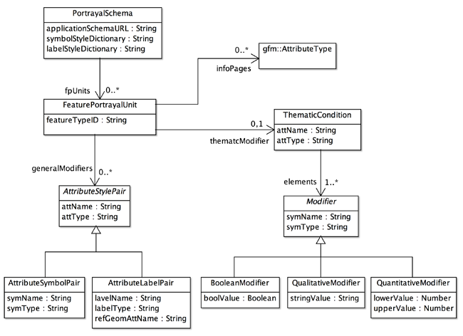

Portrayal Schema Designer
描画スキーマのデザイン
地図を描くためには，記号と注記のスタイルを地物の属性と関連づける必要があります．この関連付けが行われると，属性値を地図上でどのようなスタイルで表現したら良いか，gittok が判断し，地図を描画することができます．Portrayal Schema Designer は，地物の属性と，記号やラベルのスタイルの関連付けを行い，描画スキーマを出力するためにあります．
この作業を行うには，利用者は事前に描画スキーマについて理解すべきです．以下，描画スタイルスキーマの説明を行い，次にPortrayal Designerの操作法を解説します．
描画スキーマ
描画スキーマとは，地図を描画するに当って，使用する応用スキーマ，記号スタイルスキーマと注記スタイルスキーマを使用して，地物ごとに，描画する属性とそのスタイルをしめすスキーマのことです．描画スキーマを作るためのめたモデルが下に示す一般描画モデルです．描画スキーマと一般描画モデルの関係は，応用スキーマに対する一般地物モデルの関係に似ています．

図１．gittok の一般描画モデル
CLASS
PortrayalSchema
描画スタイルスキーマ全体の最上位クラスです．使用する応用スキーマ (applicationSchema)，記号スタイルスキーマ (symbolStyleSchema) と注記スタイルスキーマ (labelStyleSchema) を示し，地物型と描画スタイルの対を保存する辞書 (fpPairs) をもちます．
FeaturePortrayalPair
地物型のIDと，それに対応する主題整飾子 (thematicModifier) または一般整飾子 (generalModifier) を示すクラスです．ここで整飾子 (modifier) とは，地物属性を修飾して記号に変更させる情報をさします．
AttributeStylePair
属性・スタイル対 (AttributeStylePair) は，地物属性と，それに対応する記号／注記の対であり，地物属性をどのように描画するかを決めるためのクラスです．属性の名前 (attName)，属性のデータ型 (attType)，そしてそれに対する記号又は注記スタイルの名前 (symLabName)，記号か注記かの区別を示すデータ (symLabType)をもちます．
ThematicCondition
主題条件 (ThematicCondition)は，主題図を描画するために使われる情報です．主題整飾子．主題整飾子になる地物属性の名前 (attName) とそのデータ型 (attType) を属性としてもちます．ここで主題図とは，一定のテーマに絞って作成された地図のことですが，gittok では，主題属性の値をグラフィック表現する地図をさします．具体的には主題属性がブール値をとる場合，それはtrue の場合と， false の場合で，proxy幾何属性の表現を変えます．属性の型が文字列の場合は，その値ごとに，異なる表現をします．さらに，属性の型が数字の場合は，複数の区間を設定して，区間ごとにことなる表現ができるようにします．
Modifier
これは具体的には，ブール値（BooleanModifier），文字列 (QaulitativeModifier) または数字の区間 (QuantitativeModifier) のどれかになります．修飾属性が一定の値または区間にはいるとき，どの記号（symName、symType）で表現するか，が示されます．
BooleanModifier
ブール値とそれをグラフィックに表現する記号の名前と型をもつ，ブール値用の整飾子．
QualitativeModifier
文字列とそれをグラフィックに表現する記号の名前と型をもつ，文字列用の整飾子．
QuantitativeModifier
最小値 (lowerValue)と最大値 (upperValue)を示して，その範囲に値が入ったときに，グラフィックに表現する記号の名前と型をもつ，数値用の整飾子．
gfm:AttributeType
マルチメディアな属性のための情報ページで表現する地物属性の型．
ROLL NAME
fpUnits
地物を視覚化する地物描画ユニットの集まり．
generalModifiers
一般図用の，記号による地物表現を行うために指定される，一般整飾子の集まり．
thematicModifier
主題図用の，記号による段彩を行うために指定される，主題整飾子．
infoPages
対話型地図用に，情報ページとして表示する属性型の集まり．属性型には，属性の名前やデータ型の指定などがあるので，どの属性をどの情報ページで表示すればよいかが分かります．
elements
主題図の断裁のランクごとに指定される整飾子 (modifier) の集まり．
Portrayal Schema Designer
ファイルのオープンとセーブ
下の図２を参照してください．
FIELDS
Application Schema
キットが使用している応用スキーマのファイル名が表示されます．
Symbol Style Dictionary
描画に使用する記号スタイルスキーマのファイル名が表示されます．
Label Style Dictionary
描画に使用する注記スタイルスキーマのファイル名が表示されます．
Portrayal Schema
描画辞書属性と記号または注記スタイルとの関連が全て割り当てられると，それを描画スキーマとしてセーブします．また，描画スキーマを編集するときは，オープンしますが，これらの操作を行うと，ここに描画スキーマの名前が表示されます．
BUTTONS
open (Application Schema)
応用スキーマをオープンします．
open (SymbolStyle Schema)
記号スタイルスキーマをオープンします．
open (Label Style Schema)
注記スタイルスキーマをオープンします．
open (Portrayal Schema)
描画スキーマをオープンします．
save (Portrayal Schema)
描画スキーマをセーブします．
日本語
今あなたが読んでいるドキュメントが表示されます．
English
You can read the tutorial written in English.
一般図用の整飾
一般図は，Slocum et al. (2005 ) では，以下のように説明されています．
General-reference maps are used to emphasize the location of spatial phenomena.
つまり，一般図は地球上に起きている空間的な現象に着目して表現する地図を指します．つまり，どこに何があるかを示す一般的な用途に使われる地図です．代表的なものに，国土地理院が提供している国土基本図などがあります．
下に示す画面は，描画スキーマの設計をおこなうための画面ですが，中程にあるtabで，general が選択されているので，これは，一般図用の整飾を行う画面ということになります．ここでは，地物の幾何属性に対して，どのような記号スタイルを対応させるか，また文字列属性に対して，どのような注記スタイルを対応せるかを，指定します．
図２．Portrayal Schema Designer (general) の操作画面
FIELDS
Feature Types (編集可能）
どの地物を整飾の対象とするか選択するための地物一覧が表示されます．
Attribute Name（編集可能）
選択した地物のどの属性を整飾するか選択すると，その属性の名前が表示されます．
Type
選択された属性の型が表示されます．
Symbol/label style for the attribute modification
下にある Symbol Stye リスト，または Label Style リストで，地物属性を整飾するスタイルを選択し，assign ボタンを押すと，それが表示される．
Symbol styles
記号スタイル辞書に含まれているスタイルの一覧です．スタイルを選択すると，サンプルが右に示されます．
Label styles
注記スタイル辞書に含まれているスタイルの一覧です．スタイルを選択すると，サンプルが右に示されます．
Sample
選択された記号または注記スタイルのサンプルを表示します．
BUTTONS
general
この tab を選択すると，一般図用の整飾が可能になります．
assign
下のリストで選択されているスタイルを，地物属性を整飾するスタイルとして指定します．
clear
指定されているスタイルを解除します．
主題図用の整飾
主題図は，Slocum et al. (2005 ) では，以下のように説明されています．
Thematic maps (or statistical maps) are used to emphasize the spatial pattern of one or more geographic attributes (or variables), such as population density, familiy income, and daily temparature maximums.
つまり，主題図（統計図）とは，人口密度，家族の収入，そして毎日の最高気温など，地理的な属性の空間パターンに焦点をあてて表示する地図です．gittok では，主題図は，ある地物の任意の属性に着目して，その属性の値に応じた記号スタイルで表示を行う地図を指します．
図３．Portrayal Schema Designer (thematic) の操作画面
FIELDS
Feature Types (編集可能)
どの地物を整飾の対象とするか選択するための地物一覧が表示されます．
Attribute Name (編集可能)
主題を表示する幾何属性を選択すると，その属性の名前が表示されます．
Type（幾何属性）
選択された幾何属性の型が表示されます．
Modifier (編集可能)
幾何属性を整飾するために使用する主題属性を指定すると，その名前が表示されます．
Type (主題属性)
主題属性の型が表示されます．
Data collection units (編集可能)
主題属性が数値の場合は，値を取りうる区間を幾つかのデータ集合単位に分けて，その単位に入る値をもつ地物はその単位にアサインされたエリア記号で塗られます．例えば，人口０人から５０人の間の値をとる場所は，上図のサンプル欄に示された色で塗られます．データ集合単位の設定法は，まず，最小値と最大値をキーインします．次にSymbol Styleリストから，対応するエリア記号を選びます．そしてassign ボタンを押せば，データ集合単位が一つ定義されたことになります．これを単位の数だけ繰り返します．
主題属性が文字列の場合は，まずvalue 欄に文字列をキーインします．次に，その文字列が現れたときに領域を塗りつぶすエリア記号を選択し，assign ボタンを押します．これを全ての文字列分，繰り返します．
主題属性がブール値の場合は，true, false, そして，値を持たない場合 (null) それぞれについて，エリア記号をアサインします．
Symbol style
記号スタイル辞書に含まれているスタイルの一覧です．スタイルを選択すると，サンプルが右に示されます．
Label style
注記スタイル辞書に含まれているスタイルの一覧です．スタイルを選択すると，サンプルが右に示されます．
Sample
選択された記号または注記スタイルのサンプルを表示します．
BUTTONS
thematic
この tab を選択すると，主題図用の整飾が可能になります．
assign
下のリストで選択されているスタイルを，地物属性を整飾するスタイルとして指定します．
clear
指定されているスタイルを解除します．
情報ページni
情報ページとして表示される主題属性の指定
地図は主に幾何属性や文字列属性の表示を行うためにある．しかし，地物は画像や動画など，マルチメディアな属性ももつので，gittokでは，その特性に合わせた表示を行う情報ページを用意している．描画スキーマでは，情報ページに表示される属性の指定を行う．
Figure 4.情報ページ表示のための主題属性指定
情報ページでの属性表示は，地物を指定し，情報ページへの表示をチェックし，主題属性を選択することによって可能になる．主題属性を指定するとその属性が一覧表示される，
FIELDS
Feature Types (編集可能)
どの地物を情報ページ表示の対象とするか選択するための地物一覧が表示されます．
Attribute Name (編集可能)
主題属性を選択すると，その属性の名前が表示されます．
Selected att. for info.pages
選択された主題属性の名前が一覧表示されます．
BUTTONS
for info.pages
このチェックボックスをチェックすると，以後，選択される属性は情報ページに表示する属性になります．
cancel
情報ページによる表示を解除するときは，一覧表示されている属性を選択してから，このボタンを押します．
参考文献
Slocum, T. A., McMaster, R. B., Kessler, F. C,. Howard, H. H, (2003). Thematic Cartography and Geographic Visualization. Pearson Education, Inc., p.2